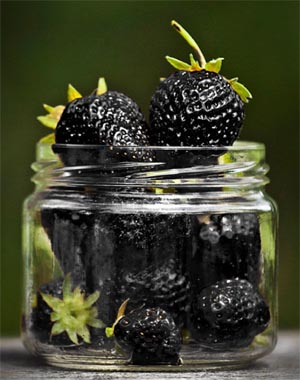
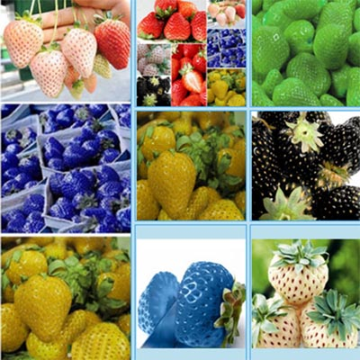

Существует ли черная клубника \ виктория ?
На
всем известных сайтах КНР продается очень много разнообразных
товаров, одним из таких видов товаров стала разноцветная
клубника: черная, зеленая, фиолетовая и др. Продавцы,
торгующие «черной» клубничкой, зарекомендовали себя
добросовестными даже на международной торговой площадке ebay.
Что
пишут про черную клубнику:
Применение - Комнатные растения
Степень выращивания – лёгкая
Период цветения – Осень
Функция - Очищение воздуха
Подходит знаку зодиака – Овен
Климат – Умеренный
Период цветения 90 дней.
Из истории: Черная клубника является излюбленным десертом, который появился в Европе и вырос в Центральной Азии в 1800 метрах над уровнем моря. По сравнению с другими видами клубники обладает большими белыми лепестками. Черная клубника сладкая с ярким вкусом, и с низким уровнем сахара. После того, как вы увидите свежую клубнику, вы окупите все свои усилия. Выращивая их самостоятельно, вы можете быть на 100% уверены, что они без пестицидов. Семена не являются GMO. Спасибо за ваш интерес к этой продукции.
Когда покупатели видят эти «экзотические» семена на eBay, они
доверяют продавцу и его положительным оценкам, но когда,
спустя 4 месяца всходят сорняки из семян присланных китайскими
продавцами, ставить отрицательные оценки уже поздно.
Существует
белая клубника «pineberries» и гигантская клубники из
Калифорнии, семена которых вы можете приобрести в любом
магазине семян.
Сортов
синей, черной, зеленой, желтой, фиолетовый клубники не
существует, а их снимки сделаны в фоторедакторе.
В реальных магазинах семян можно купить сорт клубники Черный принц который имеет темно-красный цвет и отличный вкус, и по настоящему вознаградит ваш труд при созревании.